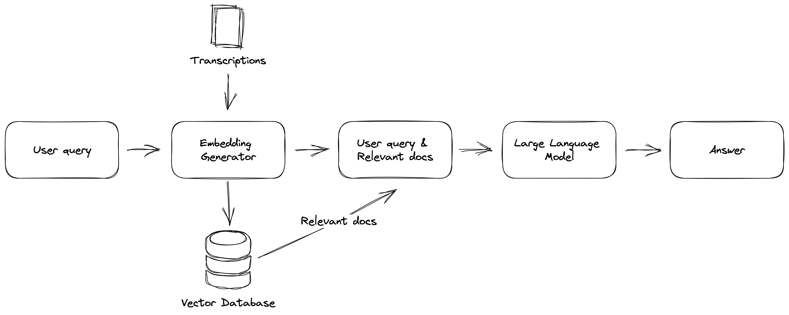

Finding information in your own documents quickly is a crucial task for many people, particularly for those large amounts of information in their documents. Using a vector databases in combination with an LLMs, finding relevant information and answers to your questions becomes a little easier and more efficient.
In this article I build product that allows me to ask questions about topics discussed in the TrueAnon podcast.

My goal is to search and ask questions about things being shared and discussed in the podcast using natural language. Giving answers to my questions and also providing the sources on which this answer is based.
The project I build here is inspired by Aleksa Gordić and his Huberman Transcript project.
To do all of this we need to build the components in the diagram displayed above. This includes:
- Gathering the data
- Transcribing podcast episode audio files
- Building a vector database of transcriptions.
- Using LLM to get answer to question based and relevant documents.
Gathering Data
Let’s start with downloading all podcast episodes of TrueAnon as audio files.
I did is by parsing the podcasts RSS feed and extracting the title and the url to the audio recording of every podcast episode and storing them into a dataframe.
def get_all_episodes_df(url: str) -> pd.DataFrame:
# Request RRS feed
response = requests.get(url)
# Parse using BeautifulSoup
soup = BeautifulSoup(response.content, "xml")
# Extract raw link to audio files
audio_files = [link["url"] for link in soup.find_all("enclosure")]
# Find the episode titles
titles = [title.text for title in soup.find_all("title")][2:]
# Build data frame of episode titles and audio links
df = pd.DataFrame({"title": titles, "url": audio_files}).iloc[::-1]
return df.reset_index(drop=True)Now that we have all the episode titles and audio file urls we make a requests to fetch all the audio files and save them to disk or a storage account using the episode name.
You can write some logic to skip the episodes you already downloaded.
def download_podcast(url: str, name: str, output_path: str = "") -> None:
# request to audio file
response = requests.get(url)
# Output path to save audio file
path = Path(output_path)
# Create directory if not exist
if not path.exists():
path.mkdir()
# Create full path to
output_path = output_path + name + ".mp3"
# Write file to directory
with open(output_path, "wb") as fp:
fp.write(response.content)Getting all the audio files.
df = pd.read_csv("...")
for episode_number in range(len(df)):
# Extract url and title
url = df.iloc[episode_number]["url"]
title = df.iloc[episode_number]["title"]
# Persist audio files
download_podcast(url, title, output_path = f"audio/")Transcription
Before we can build or vector database we need transcriptions.
One of the best ways to extract text from audio files is to use an automatic transcription tool. OpenAI whisper is a model that converts spoken words into text. This model is pretty accurate and can transcribe audio relatively fast (especially when using a GPU).
Experiment with model sizes. Sometimes smaller model are good enough.
import whisper
from whisper.model import Whisper
model = whisper.load_model("tiny")
audio_files = glob("audio/*.mp3")
def transcribe_podcast(model: Whisper, audio_file_path: str) -> None:
# Create directory if not exist
if not Path("transcriptions/").exists():
Path("transcriptions/").mkdir()
# Transcribe the recording using whisper
result = model.transcribe(audio_file_path, language="en")
# Extract the episode name
audio_file_name = audio_file_path.split('/')[-1]
# Save transcription to disk
with open(f"transcriptions/{audio_file_name.split('.mp3')[0]}.txt", "w") as fp:
fp.write(result["text"].strip())Transcribing a large amount of audio files can take a long time.
# Transcribe every episode
for audio_file in audio_files:
transcribe_podcast(model, audio_file)Once you have transcribed your videos, you will have a large set of written documents that can be used for further analysis.
Vector Database of Transcriptions
Once you have transcribed your audio files, the next step is to create a vector database. A vector database is a mathematical representation of your documents that can be used to search for similarities between them.
Chunk - Language models face limitations due to the text volume they can process at once, making it essential to divide them into smaller sections.
I load the transcriptions into a langchain document using the TextLoader. After which I use the RecursiveCharacterTextSplitter to split the documents into chunks.
from glob import glob
from langchain.document_loaders import TextLoader
# Get all the transcription text files
transcription_text_paths = glob("transcriptions/*.txt")
# Load text files using the TextLoader
documents = [TextLoader(text).load()[0] for text in transcription_text_paths]
# Create text splitter to split documents into chunks
text_splitter = RecursiveCharacterTextSplitter(chunk_size=1000, chunk_overlap=100)
# Split documents into chunks
docs = text_splitter.split_documents(documents)To create a vector database, you will need to convert your written documents into numerical vectors.
In this project I used HuggingFaceEmbeddings from langchain (wrapper for HuggingFace Embeddings/Models) to create embeddings for the episode transcriptions storing them into a FAISS vector database.
from langchain.embeddings import HuggingFaceEmbeddings
from langchain.vectorstores import FAISS
# Use HuggingFaceEmbeddings vectorize our documents
embeddings = HuggingFaceEmbeddings()
# Use FAISS to build a vector database and save to disk
vectorstore = FAISS.from_documents(docs, embeddings)
vectorstore.save_local("vectorstore")Building a initial vector database can take a long time depending on the amount of documents. However, you add/merge a new documents to your existing database.
Now that you have a vector database, you can use it to search for documents that are most relevant to your question.
To do this, you will need to convert your question into a vector. Once you have your question vector, you can compare it to the vectors in the database and find the documents that are most similar using similarity measures, such as cosine similarity.
query = "How did Jeffrey Epstein get his money?"
vectorstore.similarity_search(query)These functionality is baked into the FAISS wrapper in langchain. So we can run a query against the vector database and get the most relevant documents based on the question.
Answering Questions based upon most Relevant Documents
Now that you have the most relevant documents based on the question. You can add these documents into your prompt and send it to your LLM model. langchain provides Q&A chain in which you can use a vector database for this called VectorDBQA.
import os
os.environ["OPENAI_API_KEY"] = "..."
# LLM used to answer the question
llm = ChatOpenAI(max_tokens=100, temperature=0)
# Langchain chain or Q&A with vector database
qa = VectorDBQA.from_chain_type(l
lm=llm,
chain_type="stuff",
vectorstore=vectorstore,
return_source_documents=True
)This Q&A chain allows use to ask questions.
query = "How did Jeffrey Epstein get his money?"
result = qa({"query": query})
print(result["result"])Answer - There is a lot of mystery surrounding how Jeffrey Epstein made his money. He seemed to become a billionaire just by managing another billionaire’s money, but the finances are so opaque that no one really knows for sure.
The results object also provides the source documents upon which this answer is based.
Conclusion
In conclusion, asking questions about your own documents is now easier than ever before thanks to the latest advances in machine learning and natural language processing.
By using tools like Langchain and OpenAI Whisper, you can quickly transcribe audio, create a vector database, and find the most relevant documents to answer your question. With these techniques, you can save time and effort while extracting valuable insights from your own documents.